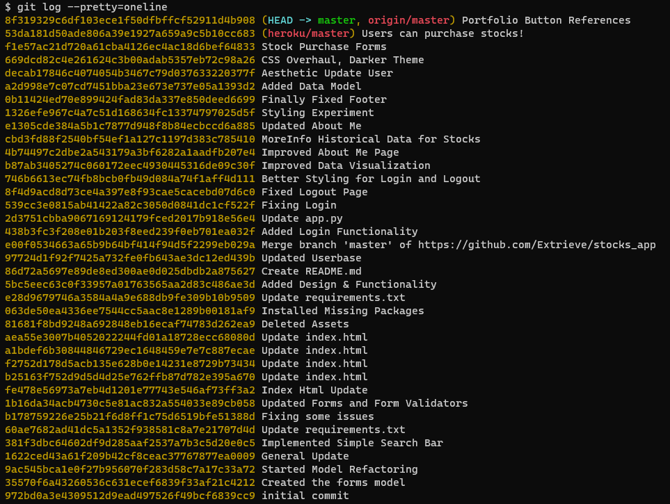

About Me

Hello my name is Nicolas Cinera and I am the author of this site.
My friends usually call me Nick, and I am in my first semester in the BAIS Masters program at USF.
The following project was accomplished using various frameworks, the main framework for this project is Flask. Similar to MVC Flask uses a Model, View
, Controller structure to facilitate aspects of full-stack website building. In this case I create objects which represent an entity in my DB, which
then are used by the Object Relational Mapper to perform querying capabilities, and then are later used by the Flask controller to render the views/templates
to the browser. Aside from flask, I used Content Delivery Networks (CDNs) for external styling, and also for Scripting capabilities such as JQuery and also
ChartJs. Most of the website elements were built from scratch aside from some html snippets such as the nav-bar element.
I am in my early 20's, so I don't have much professional experience but I am eager to proof myself in Software Engineer / Data Science related roles.
In my free time I like learning about new frameworks, in the last few years I have been very passionate about Python.
Some of my favorite libraries include pandas, opencv, flask, pygame, and the ever trusty requests!
I am a proud member of the Society of Competitve Programmers here at USF!
Other of my non-code related hobbies include powerlifting, reading, anime and movies.
I am trying to go for a 405lbs squat before the semester ends (370 current).
Git Log
Data Model

API Source